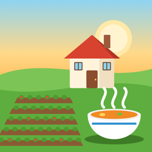

Farm & Feast
Çiftlik, balık ve Türk mutfağı oyunu
Sahil kenarındaki köyünde tarla ek, iskeleden balık tut ve restoranında köylülere Türk yemekleri pişir.
Sık sorulan sorular
Ekinlerim neden büyümüyor?
Ekinler sadece sulandıkları günlerde büyür. Çiftlikte "Sula"yı seçip ekili toprağa dokun; toprak koyulaşır. Ertesi gün ekin bir aşama büyür.
Balığı nasıl yakalarım?
Sudaki koyu balık gölgelerinin yanına dokunup oltanı at. Ekranda "ÇEK!" yazınca hemen dokun. Ardından basılı tutarak yeşil çubuğu balığın üstünde tut; sarı çubuk dolunca balığı yakalarsın. Sahil ekranındaki "?" düğmesi bu adımları tekrar gösterir.
Müşteriler neden gidiyor ve puanım düşüyor?
Her müşterinin bir sabrı vardır; sipariş baloncuğunun altındaki çubuk boşalınca kızıp gider ve düşük puan bırakır. Siparişe dokunup pişirmeye başladığında sabır çubuğu durur. Hızlı servis daha yüksek puan ve bahşiş getirir.
"Malzeme yetersiz" diyor, ne yapmalıyım?
Tariflerin malzemelerini çiftlikte hasat ederek veya iskeleden balık tutarak topla. Tohum biterse çarşıdaki Tohumcu tezgâhından al.
İlerlemem kaybolur mu?
İlerlemen cihazında otomatik kaydedilir. Uygulamayı silersen kayıt da silinir.
İletişim
Soru, öneri veya hata bildirimi için: kutalmist@gmail.com
Support
Plant crops in your seaside village, fish off the pier and cook Turkish dishes for the villagers in your restaurant.
Frequently asked questions
Why aren't my crops growing?
Crops only grow on days they were watered. On the farm, pick "Sula" (Water) and tap a planted plot; the soil darkens. The crop grows one stage the next day.
How do I catch a fish?
Tap the water next to a dark fish shadow to cast. When "ÇEK!" (Pull!) appears, tap right away. Then hold to keep the green bar over the fish until the yellow bar fills. The "?" button on the beach shows these steps again.
Why do guests leave and my rating drop?
Every guest has limited patience. When the bar under their order runs out, they leave with a low review. Once you tap an order and start cooking, their patience stops draining. Quick service earns better reviews and bigger tips.
It says I don't have enough ingredients.
Gather ingredients by harvesting on the farm or fishing at the pier. If you run out of seeds, buy more at the seed stall in the bazaar.
Will I lose my progress?
Progress is saved automatically on your device. Deleting the app also deletes your save.
Contact
Questions, ideas or bug reports: kutalmist@gmail.com
Credits
Some 3D models are from Kenney's Nature Kit and City Kit (kenney.nl), released under CC0.